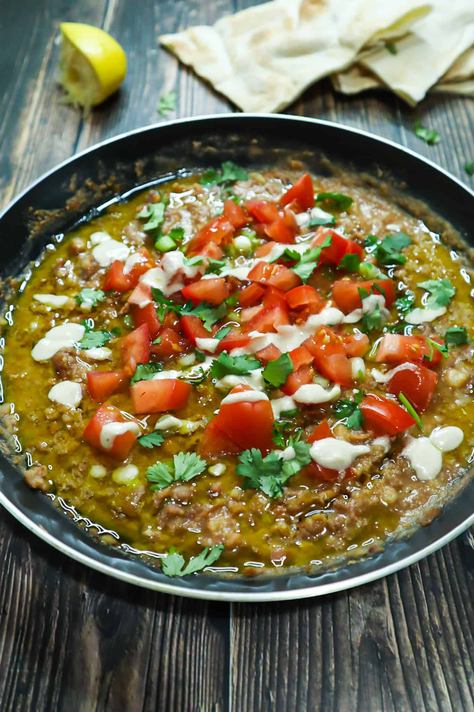

The Tender Egyptian Beans

Lastly, we turn our attention to the Egyptian beans, a hearty and nourishing dish that exemplifies the essence of Egyptian cuisine. Tender fava beans are simmered to perfection, infused with garlic, cumin, and a touch of lemon juice. Served with a drizzle of olive oil, a sprinkle of fresh herbs, and a warm slice of Egyptian bread, this humble dish offers comfort and satisfaction in every bite.
The Ingredients
- Fava Beans
- Lemon
- Red Onion
- Olive oil
- Tomato & Garlic
- Spices
How To Make Them
- Heat the olive oil in a pan over medium high heat. Saute the onion until translucent. Add in the garlic and cook for a minutes.
- Add the diced tomatoes followed by the fava beans and the spices. Pour in the water and let it simmer for 15 minutes.
- With the back of a wooden spoon, gently press and mash some of the fava beans to give the mixture a creamy texture. Finish with the lemon juice.
- Transfer the ful medames into a bowl and drizzle with olive oil. Top with diced tomatoes, chopped parsley and slice jalapeno.